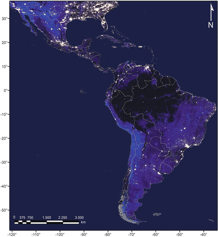
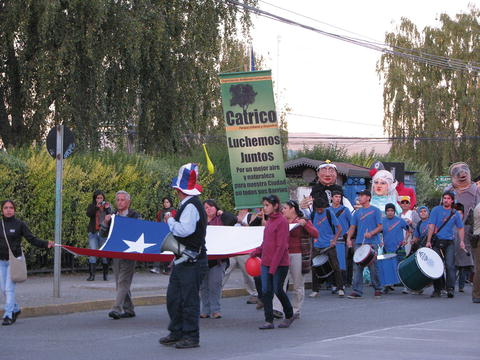
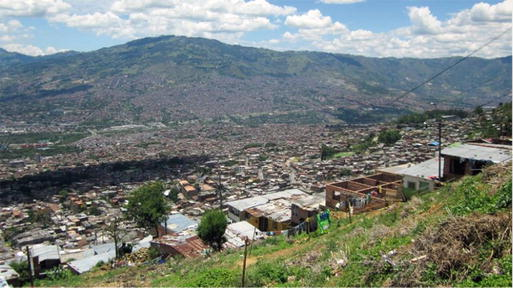
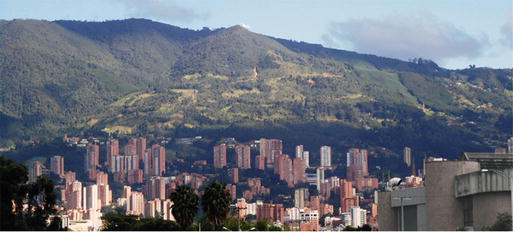
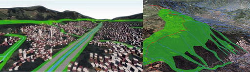

Five Main Findings
- Latin America is increasingly urbanized but the urban population is marked by extreme social inequity, which impacts biodiversity and ecosystem services provisioning
- Urban sprawl encroaches on several global biodiversity hotspots
- Impacts on biodiversity occur in mega cities as well as in mid-size and small cities, the latter two are expected to grow the most in population and in size in the future.
- Research on urban ecology is severely limited, because of lack of funding and prioritization amongst supporting agencies
- Existing policies are insufficient to provide protection for ecosystems in and around cities, and new models of city sustainability need to be implemented.
28.1 Trends in Land-Use Change and Demography
The relationship between cities and biodiversity is extremely complex in Latin America (the 15 countries of South America and the Caribbean). The region is simultaneously the world’s most urbanized, has some of the world’s largest social and economic inequities, and hosts some of the world’s most biodiversity-rich ecosystems including several biodiversity hotspots (Myers et al. 2000). In addition, many of the national economies in the region are based on unsustainable practices of natural resource exploitation. The practices reflect a lack of integration of environmental issues in land-use planning policies and development strategies, as well as low levels of governance and limited information on the affected ecosystems (Naylor 2009).
The main driver of land-use change in Latin America has traditionally been agriculture, but industrialization of agriculture has caused abandonment of poor soils (Grau and Aide 2008). Meanwhile, city expansion is now a significant contributor to land-use changes, and the number of cities in Latin America has grown sixfold in the past 50 years. This has resulted in large rural areas with low occupation, alternated with densely populated cities (Fig. 28.1).

Fig. 28.1
Satellite image of Latin American city lights from April 2012, including national borders. The urban agglomerations contrast to the vast areas with low-population densities. (Image modified from ©NASA Earth Observatory image by Robert Simmon, using Suomi NPP VIIRS data provided courtesy of Chris Elvidge (NOAA National Geophysical Data Center). Suomi NPP is the result of a partnership between NASA, NOAA, and the Department of Defense. All Rights Reserved)
More than 80 % of the population in Latin America lives in cities, and by 2050 the number is expected to reach 90 % (UN 2011). This has resulted in Latin America being the region with the highest proportion of urban inhabitants in the world. The majority of the urban areas were established between 1950 and 1990 as a result of a rapid demographic increase, coupled with an intensive rural-urban migration (ONU-HABITAT 2012). Following a strong decrease in fecundity and an increase in life expectancy, the transition is slowing down. The annual growth rate is currently at around 1.15 % for Latin America, and no significant changes are expected in the near future. This stabilization in urban populations may support economic growth that can offer opportunities to address long-standing regional issues of poor household sanitation and low quality housing; moving forward from an agenda focused mostly in urban infrastructure into a more sustainable, greener development (McDonald and Marcotullio 2011).
As cities in Latin America are expected to continue to expand, partly on areas harboring valuable biodiversity hotspots, there is an urgent need to understand how biodiversity and ecosystem services interplay in and around cities. Increasing attention by planners in countries across Latin America on the importance of including ecological aspects in the planning processes, and their importance for human well-being, provides an opportunity to advance this understanding. However, critical knowledge gaps need to be bridged in order for urban planning and development to be designed so as to support local ecosystems. This assessment aims to describe urbanization trends in Latin America and the related impacts on biodiversity and ecosystem services in cities. It also explores the potential for city planning that focuses on support for biodiversity and ecosystem services, within the urban areas as well as in their surroundings.
28.2 Biodiversity Hotspots, Social Inequity, and Natural Hazards Shape Urban Ecosystems
The effects of urbanization on biodiversity are particularly serious in Latin America because cities are located in or around areas with high levels of species richness and endemism (Liu et al. 2003). The cities are expected to continue to expand, partly on areas harboring biodiversity hotspots (Chap. 1 and Fig. 1.1). The region contains six biodiversity hotspots; for example, the Cerrado Region in Brazil is the most extensive woodland savanna in South America and covers 21 % of the country. The Mesoamerican Forests stretches across most of Central America, is the world’s third largest biodiversity hotspot, and fills an important function as a corridor for many Neotropical migrant bird species. The Tropical Andes runs through Venezuela, Chile, Argentina, Colombia, Ecuador, Peru, and Bolivia, and is described as the richest and most diverse region on Earth (Mittermeier et al. 2011). The Chilean Winter Rainfall-Valdivian Forest, covering the central-northern part of Chile and featuring Chile’s Mediterranean ecosystem, harbors 50 % of all species of vascular plants in Chile, while also having the country’s highest density of human settlements (Armesto et al. 2007; Underwood et al. 2009). In other areas of Latin America, rich coastal ecosystems and river deltas have been the centers for population settlements and urban growth, for example, in Argentina, Uruguay and Brazil.
One of the most conspicuous characteristics of Latin America is that urban populations exhibit extreme social and economic differences. More than 25 % of the urban inhabitants live in very poor settlements, while the richest 20 % earn almost 20 times more than the poorest 20 % (ONU-HABITAT 2012). The structures of inequity go beyond differences in income and housing standards, to also include an uneven distribution of green space availability and quality. Ecosystem differences associated with high-income areas versus low-income areas ultimately affect the ability of depauperate urban ecosystems in poor neighborhoods to provide ecosystem services essentials for human well-being (Barbosa et al. 2007; Reyes and Figueroa 2010).
Conversion of land to built-up urban environments affects ecosystem functions, which contributes increasing environmental vulnerability of new urban areas. For example, many financially poor communities establish informal settlements, often densely built, in vulnerable areas such as riparian corridors, coastal ecosystems, and steep hills. This unplanned development has shown to severely impact ecologically valuable and sensitive areas, for example by sewage discharge into watercourses, infill of wetlands for urbanization, and deforestation. At the same time, 60 % of the natural hazards in urban settings in Latin America are associated with climatic events (Zapata 2010). When services such as flood regulation and storm water retention decrease due to, for example, deforestation (Bradshaw et al. 2007), the effects of natural events can thus be hazardous, manifested, for example, in frequent land and mud slides in Chilean and Colombian cities (Flood Observatory 2012). The effects can be particularly serious certain years due to the natural cycles of changing climate and weather, manifested in El Niño years. Thus, functioning ecosystems play a vital role for resilient urban areas. Lack of data on the functions and values of local ecosystem services represents a main challenge for conservation in these areas. Unplanned urban sprawl may also increase conflicts between nature and humans in peri-urban ecosystems, for example by increasing the risk of wildfires and wildlife-human disease transmission in both directions.
At the other end of the spectrum, the planned areas where the wealthiest segments of the population live, increasingly mimic the low-density urban environments that are common in many places in the USA and other developed countries. These areas are signified by their large, commonly highly energy-demanding houses, large garden areas dominated by relatively few selected species, and a resulting urban sprawl that demands the areas’ inhabitants to rely on private transportation. The land conversion to this type of urban areas commonly decreases the availability of natural and often highly valuable ecological habitats (Fig. 28.2). Moreover, the remaining, preferred vegetation provides only limited support for the native communities, as they typically include plants species that are considered aesthetically pleasing but are non-native. These species often become invasive, such as Acacia spp. and Robinia pseudoacacia (Pauchard et al. 2006). This is one of the main drivers of biotic homogenization across the region, and is a significant threat to biodiversity conservation. Furthermore, invasive animals such as feral dogs and cats, pigeons, rats, and house sparrows, often find such conditions adequate to expand their ranges, in detriment of native species (Sushinsky et al. 2013).

Fig. 28.2
Local people demanding protection of the local wetlands, an important component of the local ecosystems in Valdivia, Chile (Photo by and published with kind permission of ©Javiera Maira 2013. All Rights Reserved)
Invasive species are becoming dominant features of Latin American cities, to a large extent because of human interventions, which affects the capacities to produce ecosystem services. An increased understanding of the drivers of the species’ establishment, how they impact local biodiversity, and their production of services or disservices to humans, is needed. Invasive trees, by replacing the native vegetation, can increase for example, the risks of fires in peri-urban areas and even cause health concerns because of their allergenic characteristics (Pauchard et al. 2006; Mardones et al. 2011). As cities act as propagule sources, invasive species can extend from the urban centers to natural habitats in the surrounding peri-urban areas (e.g., von der Lippe and Kowarik 2008).
Interestingly, cities can also support a rich biodiversity of native species, capable of withstanding the highly anthropogenic environments that cities represent. Studies have shown that while biodiversity tends to decrease along a rural-urban gradient, some generalist native species do flourish in urban and peri-urban ecosystems (Reis et al. 2012). There is no consistent relationship between income and biodiversity. In some cases local communities in low-income areas have managed to reintroduce urban green spaces in their neighborhoods; in others, limited maintenance of vegetation and abandoned allotments have resulted in higher species richness, which include native plant and animal generalists (e.g., Rio de Janeiro and Valdivia, Chile); in some more affluent neighborhoods a growing trend promotes the replacement of non-native vegetation by native ornamental plants.
28.2.1 Identified Research Gaps and Implementation Challenges
Several researchers have highlighted the need for increased focus in research on biodiversity and ecosystem services in urban settings (Pauchard et al. 2006; Gaston 2010; Ortega-Álvarez and MacGregor-Fors 2011). However, despite a rapid increase of articles related to urban ecosystems in recent years, less than 2 % of them focus on urban wildlife and the impacts of cities on biodiversity. Moreover, of the studies of urban wildlife made over the last 40 years, only 3.7 % focused on Latin America.
In order to get a thorough understanding of existing research on urbanization and biodiversity in Latin America, with special attention to South America, a literature search was conducted using Web of Science. Key words were: urban ecology, biodiversity, urban, cities, ecosystem services, South America, and all possible combinations of these terms. The search was then deepened by focusing on authors often cited in the papers, keeping the search focused on urban biodiversity and ecosystem services, rather than for example solely on urban planning.
The findings corresponded to what many authors have previously stated (e.g., Gaston 2010); research on the consequences of rapid urbanization on biodiversity and ecosystem services in Latin America is poorly developed (see Textboxes 28.1, 28.2 and 28.3). Studies focus primarily on land-use change, where urbanization is one of the main drivers, alongside agriculture and forestry (Pauchard et al. 2006; Izquierdo et al. 2008; Rojas et al. 2013). When research has analyzed urban structures and urban morphology, attention has been paid fundamentally to social segregation and inequity (e.g., Ingram and Carroll 1981; Madaleno and Gurovich 2004; Krellenberg et al. 2011), and some on sustainable development (Kopfmuller et al. 2009). However, most of the studies focus only on large cities or megacities, and are restricted to study cases in Chile (Textbox 28.1), Argentina (Textbox 28.2), and the Atlantic Forest area.
It is worth noting that little research has been done on urban ecology in small towns and medium-sized cities, which are the fastest growing areas of the region and together have the largest proportion of the region’s population (WUP 2011). Furthermore, they are the areas that are expected to have the highest impact on biodiversity and ecosystem services because they have a greater perimeter/area ratio, and therefore higher interface with non-urban ecosystems (Aguayo et al. 2007).
It was also found that extremely few papers explicitly analyze the impacts of urbanization on biodiversity. The existing studies commonly looked at ecological components, but failed to connect these to the social development patterns or the ecosystems that they were part of. Birds are the most studied taxa in urban ecosystems worldwide (Evans 2010), with Brazil, Argentina and Mexico (Textbox 28.4) counting for 79 % of the publications (Ortega-Álvarez and MacGregor-Fors 2011). A general pattern the authors found was that bird species richness declined with an increasing urbanization rate, whilst bird abundances were highest in those areas with high housing density. Other variables such as town size (Ortega-Álvarez and MacGregor-Fors 2011), habitat quality, and availability and heterogeneity (Faggi and Perepelizin 2006), were found to be important factors for shaping bird distribution in cities such as for example Buenos Aires, Argentina.
There is a consistent lack of standard methodology to assess biodiversity and ecosystem services in urban settings, which can undermine comparability and generalizations. This situation may prevent a correct translation of scientific findings into management practices or policies. For example, acknowledging the importance of urban green spaces on ecosystem services provision (Bolund and Hunhammar 1999; Donovan et al. 2005; Nowak and Crane 2002; Barbosa et al. 2007), biodiversity (Clergeau et al. 2006; Cannon et al. 2005; Gaston et al. 2005), and human well-being (Fuller and Irvine 2010) is of extreme importance. Guidelines for access may vary between regions, however the World Health Organization recommends having between 9 and 11 m2 per habitant; data gathered between 2003 and 2008 in 16 cities in Latin America, show that more than half of them exceed the recommendation (ONU-HABITAT 2012). Common criteria for determining how fundamental measures of “green space” availability, access and quality, needs to be established. Green spaces may be widely available but not necessarily be of good quality, and may not necessarily provide the expected ecosystem services (Barbosa et al. 2007).
Data on urban development and urban ecology is often collected for other purposes than municipal environment management planning, and may thus pass unnoticed by municipalities and researchers. However, properly merged and analyzed, this data could contribute significantly to urban ecology research in Latin America (Sagarin and Pauchard 2012). Today, municipalities rely to a large extent on documents such as Environmental Impact Assessments and urban zoning reports for their environmental planning and management, but the sources are commonly not considered scientifically robust by researchers, and the exchange of information between academia and urban planners is extremely limited.
Funding in Latin America for ecological research and especially for social-ecological research, is not a priority. However, there is an urgent need to understand the interplay between cities, biodiversity and ecosystem services in the region. Issues such as the effects of rapidly increasing urban density on ecosystem functions, how ecosystem services are linked to the availability of different types of urban green spaces, and how socioeconomics, urban morphology, and natural as well as anthropogenic hazards (e.g., landslides, peri-urban wildfires) affect ecosystem provisioning and biodiversity conservation over time should be targeted in research agendas. Such information would be enormously valuable in helping Latin American cities guide their urban planning and conservation policies, especially in more underprivileged countries and cities where little funding is directed to ecological research.
Textbox 28.1 Nature and Urban Planning Tools in Chile
The critical issue for urban planning in Chilean cities is the lack of an adequate planning instrument to safeguard biodiversity and ecosystem services, so issues impacting biodiversity directly, such as urban sprawl or green space decrease, cannot be controlled properly through consistent planning tools. The reduction in wetland areas, especially, is a critical issue in growing cities such as Valdivia and Concepción, where these, are constantly in-filled for housing and road infrastructure development, contributing to the decrease in biodiversity and the provisioning of valuable ecosystem services such as flood regulation or recreation.
A clear regulatory framework for nature conservation in cities in Chile is lacking. The General Law on Urban Planning and Construction (LGUC), enacted in 1974 and still valid today, regulates residential and industrial uses, constructions, and the location of public facilities. The responsibility to nominate protected zones lies with the Public National System of Protected Areas (SNASPE; Pauchard and Villarroel 2002). The LGUC only considers those zones which the SNASPE has already awarded protection status as zones valuable enough to protect, leaving many urban or peri-urban areas unprotected.
Some other initiatives have been developed to respond to these planning and conservation problems. For example, a comprehensive landscape design strategy was developed in the 1960s for the Santiago Metropolitan Area, incorporating green space and infrastructure using an integrative approach (Pavez 2002). Later, the Environmental Impact Evaluation System (SEIA) was developed as a planning tool to support environmentally sustainable planning. However, in cities as Concepción, the SEIA was used to guide the proposed city expansion plan but the plan focused insufficiently on conserving the natural landscape, and was poorly adapted to the actual growth rate of the city. As a result, impervious surfaces in the city increased by more than 6,200 ha (2000–2010) since the approval of the metropolitan plan (2003), and 16 % of the former natural areas, such as wetlands and native forest, had been lost (Rojas et al. 2013).
Recently, triggered by the earthquake and tsunami on February 27, 2010, Sustainable Planning Programs (PREs) have been implemented by the national government. These plans recognize the role of nature for earthquake recovery, mostly as a buffer zone of forests and dunes along the coast. However, they fail to recognize other ecosystem services associated with nature and local culture. For example, urban wetlands in Valdivia and Concepción are useful for recreation and flooding protection but also for people’s emotional recovery and resilience after natural hazards such as tsunami and earthquakes.
The future does, however, seems to be positive for the prospects for increased biodiversity support in Chilean cities, due to a new law that makes Strategic Environmental Assessments (SEAs) mandatory in urban municipal development plans. The law (20.417) was passed in 2010 to include environmental procedures which are progressively being recommended for Chilean urban planning. These should be included throughout the process and are a step towards an integrated planning that considers the interplay between the social, economic and ecological spheres to increase resilience of cities in Chile.
Textbox 28.2 Nature in the City: Some Trends in Argentina
In Argentina, 90 % of the population lives in cities (Ministerio de Planificación Federal, Inversión Pública y Servicios 2011). The increase in urban populations and expansion of city boundaries during the last decades of the twentieth century have created new challenges for the conservation of the local biodiversity, especially in the metropolitan area of Buenos Aires and big cities like Cordoba, Rosario, Mendoza, and San Miguel de Tucumán. In those urban settlements, which contain 50 % of Argentina’s population, the natural landscape has become heavily modified, and as a result the local biodiversity is under high stress (Franceschi 1996; Formiga and Garriz 1999; Martínez 1992; Morello et al. 2000; Guerra 2005). As described by Morello et al. (2000), the invasion of exotic plants and animals, habitat changes due to climate, high use pressure, and vandalism can be observed. A participatory planning process may reduce the negative impacts of local populations on the ecosystems, and help to conserve or restore natural environments. This notion has inspired several scientific studies on urban ecology in Argentina (Faggi and Carretero in press). The studies focus on composition, structure and functions of urban ecosystems, and try to answer how individual plant and animal species and communities are affected by the growth of cities, including the underlying biotic and abiotic mechanisms, in order to identify vulnerable species and to develop effective measures for their conservation.
As a result, since the end of the twenty-first century, the awareness of the need for conservation, rehabilitation, and restoration of urban green spaces and biodiversity. Many cities in Argentina have launched programs on conservation of natural areas, often as initiatives taken by communities or NGOs has increased among both Argentinean city planners and concerned citizens. Consequently, several urban reserves (URs) have been implemented in and near city edges. URs are characterized by maintained natural and semi-natural ecosystems, a high degree of biodiversity, landscape heterogeneity, and the possibilities for recreation and environmental education. They are intended to act as counterpoints to the heavily human-dominated urban landscapes, and provide opportunities for functions not well served by current recreational parks (Perelman et al. 2012). URs have a significant value especially in the metropolitan area where, according to the census data of 2010, the ratio of public green park area per inhabitants reaches just 3 m2 (Indec 2010), and the parks are unevenly distributed in the region. The URs have added many hectares of urban green areas to the cities where they are located, and at more than 15 m2 of green areas per inhabitant well exceed the values recommended by the World Health Organization.
A recent example, in Buenos Aires, is the implementation of a new 18 ha urban reserve behind the University Campus, initiated in mid-December 2012. The reserve preserves part of the riparian ecosystem of the Rio del Plata estuary and connects to other urban reserves like Costanera Sur Reserve (370 ha) Ribera Norte (12 ha), and Vicente Lopez (3.5 ha) created in the 1980s and 1990s. These coastal reserves are homes to over 200 species of plants and 400 animal species, and connect to the coastal biodiversity corridor linked to the delta of the Paraná River. All of the reserves have free entry, are easily accessible by public transportation, and provide wonderful opportunities for bird watching as they are home to around 300 bird species. At the same time, the URs are also good examples of how nature can recover from anthropogenic activities, as some of them were created on landfills adjacent to the La Plata River where spontaneous, mostly native nature developed quickly. However, new challenges have appeared and the URs now face issues like exotic tree invasions. In a counter-action, the managers of UR Costanera Sur, which became famous through its four large lagoons, have developed a participatory framework to rehabilitate those lagoons that went dry in the last years because of the invasive trees.
In the near future, the metropolitan area needs to address and integrate green space management. This should be conceived as an ecosystem-based policy connecting the network of all types of urban greens, such as parks, green spaces, reserves, river corridors, remnant woodland and urban ornamental vegetation, with the ecosystems in the urban hinterlands. However, it is a distant goal today, since administrative authorities do not perceive the metropolitan area as a whole, and the several municipalities often have differing political interests, which affect the environmental agendas. It is imperative that policies for the metropolitan area, which is home to more than 1/3 of the population, are designed to meet users’ needs and protect urban biodiversity with a long-term perspective. These policies should provide increased financial and qualified human resources for program implementation, which holds the potential to effectively safeguard and improve the natural capital.
Textbox 28.3 Colombia: Diversity in All Cities
Colombia’s location and topography supports an unusually wide variety of landscapes, and floral and faunal species. Located in the northwest of South America, Colombia borders two oceans in the west and in the north, and contains jungles, savannahs, and mountains. It has the world’s largest number of bird and orchid species, the second largest number of plant species, amphibians and butterflies, and the third largest number of reptile species (Revista Semana 2008).
Colombia’s cities are still below the megacity minimum of ten million people. The country’s three principal urban areas are located on the Andes Mountains and have 7.6, 2.4, and 2.3 million inhabitants in Bogotá, Medellín and Cali, respectively. The second largest group of cities is located on the Atlantic coast in the west, and 12 more, each with a population exceeding 400,000 inhabitants, are dispersed across the nation.
Urban population growth and concentration in Colombia has caused a largely irreversible degradation of natural areas in and around the cities. In Medellín (Figs. 28.3 and 28.4), the second largest city of Colombia, the public administrators and local planning authorities have launched a Green Belt programme (Fig. 28.5) aimed to control the legal and illegal urban expansion up the hills that surround the city.

Fig. 28.3
Northwest Medellín, seen from the east slope of the valley. The area is inhabited primarily by low-income settlers, settling higher and higher up the slope, causing informal urban sprawl which intermingles with the surrounding ecosystems (Photo by and published with kind permission of ©Gloria Aponte 2012. All rights reserved)

Fig. 28.4
Medellín southeast, seen from the low west part of town. The urban sprawl in this part of the city is primarily the result of commercial housing development projects aimed to attract upper income families. In these areas, remnant vegetation is replaced by ornamental exotic species and therefore biodiversity is highly modified (Photo by and published with kind permission of ©Gloria Aponte. All rights reserved)

Fig. 28.5
Comparison of two landscape planning alternatives. Rather than basing the ecosystem management approach on a rigid green belt model (left), why not develop a model that is inspired by the traditional poncho and thus has a shape that is close at heart to the Colombian identity (right). This model would allow the water, born at the mountain tops, to flow naturally down the rough terrain, along the built-up environment, through the city’s fringes, and be an integral part of the urban landscape, available for people to see and enjoy (Prepared by and published with kind permission of ©Gloria Aponte. All rights reserved)
However, the Green Belt model does not necessarily meet the needs of the Medellín society, nor benefit the local biodiversity, partly because it only addresses the ‘green’ aspect of the urban ecosystems. The ‘blue’ aspect is also vital to address, and is crucial for social and ecological well-being alike. Studies have been done on the natural water streams that flow down the hills that surround Medellín, along the valley where the city is located, and out to the rural hinterlands. These natural water bodies are currently used as outlets for household sewage, but the research findings show how instead the numerous streams can be used as means to naturally conserve and reinstate native biodiversity, as an integral part of the densely urbanized lower areas of the mountain hills. As a result of the research, a set of guidelines has been formulated, directed to improve the water quality of the streams, particularly in the border zone between the urban and the rural where the water leaves the urban area. The aim is to create a healthier urban living environment for humans and nature alike. As a secondary result, if the guidelines are implemented properly, the area’s natural landscape may be restored and thereby better support local native biodiversity.
Textbox 28.4 Mexico: Challenges for a Fast Growing Urban Population
The current urbanization trends in Mexico, such as the establishment of new settlement areas and sprawl of existing urban areas, are transforming natural and rural ecosystems (Garza and Schteingart 2010). The urban biodiversity commonly includes only a limited variety of floral species, which are typically scattered and exotic, and the urban conditions have been shown to accelerate depletion of faunal wildlife communities (Nocedal 1987; MacGregor-Fors et al. 2012). However, encouraging examples of urban areas can be found in Mexico that promote the presence of complex and diverse wildlife communities. High biodiversity-rich areas, where a rich flora of trees, shrubs, and herbaceous plants support ecosystem-specific fauna, often have a positive social impact, can increase the real estate values, and can improve the ecological quality of the areas (MacGregor-Fors et al. 2009; Ortega-Álvarez and MacGregor-Fors 2011).
Urban ecology as a research discipline in Mexico emerged only in the 1980s, with research focused on topics such as air and water pollution, local climate, urban greening, and urban-related fauna (Rapoport and López-Moreno 1987; Gío-Argáez et al. 1989). Fortunately, the interest in studying ecological patterns and processes in Mexican urban areas has increased considerably in the last decade. Many recent studies have focused on bioindicator groups to assess the response of wildlife communities to urbanization, while others have described urban vegetation shifts in relation to socioeconomic variables (e.g., birds) (Ortega-Álvarez and MacGregor-Fors 2011). Results of some of these studies have suggested interesting management and planning activities. However, there is an apparent lack of mechanisms for including the findings in policies, and tools to efficiently implement the policies.
There is a pressing need to fund and support urban ecological studies. A worrisome dearth of knowledge remains, regarding even the most basic knowledge of how urban ecosystems function and interact, especially as current ecological studies are conducted over a limited time span. Two major biases in the research also need to be addressed: (1) the focus is primarily on large cities located in the center of the country, basically ignoring the ecological patterns and processes in medium- to small-sized human settlements of northern and southern Mexico, and (2) research especially targets a few selected wildlife groups, mainly birds. Addressing these biases can contribute to bridging the current knowledge gaps in research. It can also yield suggestions on how to integrate knowledge and evidence-based action to not only increasing ecological quality of urban areas, but also to improve human well-being.
The need to bridge the knowledge gap between the findings in ecological research and the decision-making related to urbanization in Mexico is urgent. Policymakers and planners also need to involve citizens in governance processes in order to tailor decisions to meet the needs of the people and be effectively implemented. While conventional environmental education could raise awareness about urban-related issues and influence direct actions, several other novel ways can also draw people’s attention and get them involved in creating ecologically-friendly cities. Urban areas and biodiversity need not be mutually exclusive, and cities can –and should– promote inclusiveness of nature and wildlife in the urban landscape, rather than maintaining barriers. Finally, it is crucial that decisions and actions in urban development aim to support an ecosystem-based urban development. They need to be carefully documented and analyzed, rest on a solid foundation of transdisciplinary research, and have a systems perspective rather than focusing on individual factors treated as separate from a social and ecological context.
28.3 Conclusions
The rural to urban migration in Latin America is slowing down, as does the population growth within cities. The region is expected to reach its urban population peak within the next few decades. By then, it is expected that 90 % or more of the population will live in urban areas. However, as the examples in this text illustrates, cities keep expanding their boundaries following an influx of low-income settlers from rural areas, and an outflow by financially well-off inhabitants from the city cores to the peri-urban areas and the neighboring rural hinterlands.
The region at large contains some of the richest biodiversity in the world. Much of the urban sprawl in the peri-urban areas encroaches on highly sensitive ecosystems such as rivers, floodplains, wetlands, and coastlines (Chaps. 3 and 22). This in turn increases the risk of damage from natural hazards such as flooding and earthquakes which are common in the region. Furthermore, changes to ecosystems in the urban centers also percolate into peri-urban ecosystems, especially increasing the number of invasive species and pollutants in semi-natural areas.
Knowledge on how local ecosystems function in and around urban areas, how they are interconnected, and how they can adapt to a changing environment, is limited. Partially because of this lack of knowledge and partially because of limited communication between researchers, policy-makers, planners and the public, biodiversity and ecosystem conservation is poorly included in the planning of most Latin American cities (Chaps. 21 and 22). A major effort needs to be implemented to study and monitor biodiversity and ecosystem services in the region considering both urban and peri-urban ecosystems and their interactions and connections. Although many studies have been done and much is known about these processes in other regions of the world, the unique characteristics of individual cities and ecosystems in Latin America strongly risk limiting the potential to generalize research findings.
Priorities in how to achieve a sustainable urban development remain a challenge. Conservation of ecosystems and biodiversity, and support for the provisioning of ecosystem services, fails to be acknowledged as a primary means to improve quality of life for the city inhabitants. Three key challenges to address in Latin America are thus: (1) to slow down the urban sprawl that is driven partly by extreme income inequity, that generates a complex mosaic of urban settings, that often encroaches biodiversity-rich and sensitive areas; (2) to understand the different dynamics of how humans manage and impact urban ecosystems in different cities, and across different social and income groups; and (3) to increase awareness amongst policy-makers, planners and the public on the importance of functioning ecosystems for human well-being, which is fundamental in order to change how cities foster biodiversity and ecosystem services. Encouraging involvement by the public in management of the local ecosystems, as well as in formal decision-making, can be key to increasing the chances for long-term compromises between ecosystem sustainability and city growth.
Acknowledgments
To Maria Schewenius for her insightful editing of the manuscript. To Joan Pino, Cecilia Herzog and Juana Mariño for their useful comments. AP and OB funded by Ministerio de Economía, Chile (ICM P05-002) and CONICYT PFB-23. OB funded by FONDECYT #11110183, CONICYT/FONDAP/1510020 and partially supported by the Urban Sustainability Research Coordination Network through U.S. National Science Foundation (Grant No. 1140070).
References
Aguayo, M., Wiegand, T., Azócar, G., Wiegand, K., & Vega, C. (2007). Revealing the driving forces of Mid-Cities urban growth patterns using spatial modeling: A case study of Los Ángeles, Chile. Ecology and Society, 12, 13.
Armesto, J., Arroyo, M., & Hinojosa, L. (2007). The Mediterranean environment of central Chile. In T. T. Veblen, K. R. Young, & A. R. Orme (Eds.), The physical geography of South America (pp. 184–199). Oxford: Oxford University Press.
Barbosa, O., Tratalos, J., Armsworth, P., Davies, R., Fuller, R., Johnson, P., & Gaston, K. (2007). Who benefits from access to green space? A case study from Sheffield, UK. Landscape and Urban Planning, 83, 187–195.CrossRef
Bolund, P., & Hunhammar, S. (1999). Ecosystem services in urban areas. Ecological Economics, 29, 293–301.CrossRef
Bradshaw, C. J., Sodhi, N. S., Peh, K. S. H., & Brook, B. W. (2007). Global evidence that deforestation amplifies flood risk and severity in the developing world. Global Change Biology, 13(11), 2379–2395. doi:10.1111/j.1365-2486.2007.01446.x.CrossRef
Cannon, A., Chamberlain, D., Toms, M., Hatchwell, B., & Gaston, K. (2005). Trends in the use of private gardens by wild birds in Great Britain 1995–2002. Journal of Applied Ecology, 42, 659–671.CrossRef
Clergeau, P., Croci, S., Jokimäki, J., Kaisanlaht-Jokimäki, M. L., & Dinetti, M. (2006). Avifauna homogenisation by urbanisation: Analysis at different European latitudes. Biological Conservation, 127, 336–344.CrossRef
Donovan, R., Stewart, H., Owen, S., MacKenzie, A., & Hewitt, C. (2005). Development and application of an urban tree air quality score for photochemical pollution episodes using the Birmingham, United Kingdom, area as a case study. Environmental Science & Technology, 39, 6730–6738.CrossRef
Evans, K. L. (2010). Individual species and urbanization. In G. Kevin (Ed.), Urban ecology. Cambridge: Cambridge University Press.
Faggi, A., & Carretero, E. M. (en prensa). Ecología Urbana en Argentina. Una visión sintética del estado del conocimiento Avances de Ecologia Urbana en Latinoamérica. Ian Mac Gregor-Fors y R. Ortega A. (Eds.).
Faggi, A., & Perepelizin, P. (2006). Bird richness along an urbanization gradient in Buenos Aires city. Revista del Museo Argentino de Ciencias Naturales (n.s.), 8, 289–297.
Flood Observatory. (2012). Dartmouth flood observatory. Space-based measurement of modeling surface of water. http://floodobservatory.colorado.edu/. Data consulted December 2012.
Formiga, N., & Garriz, E. (1999). Los impactos del crecimiento urbano en el área noreste bahiense. GAEA Contribuciones Científicas, 11, 253–264.
Franceschi, E. A. (1996). The ruderal vegetation of Rosario City, Argentina. Landscape and Urban Planning, 34, 11–18.CrossRef
Fuller, R., & Irvine, K. (2010). Interactions between people and nature in urban environments. In K. Gaston (Ed.), Urban ecology. Cambridge: Cambridge University Press.
Garza, G., & Schteingart, M. (2010). Los grandes problemas de México, II, Desarollo urbano y regional. El Colegio de México, México, D.F. 657p.
Gaston, K. (2010). Urbanization. In K. Gaston (Ed.), Urban ecology. Cambridge: Cambridge University Press.CrossRef
Gaston, K., Warren, P., Thompson, K., & Smith, R. (2005). Urban domestic gardens (IV): The extent of the resource and its associated features. Biodiversity and Conservation, 14, 3327–3349. Individual species and urbanization. In K. Gaston (Ed.), Urban ecology. Cambridge: Cambridge University Press.
Gío-Argáez, R., Hernández Ruiz, I., & Sáinz-Hernández, E. (1989). Ecología Urbana. Conacyt– SGDSDDF–SESIC-SEP–UNAM–Secretaría de Desarrollo Urbano y Ecología–UAM. México, D.F. México, 220 p.
Grau, H. R., & Aide, M. (2008). Globalization and land-use transitions in Latin America. Ecology and Society, 13(2), 16. http://www.ecologyandsociety.org/vol13/iss2/art16
Guerra, W. (2005). Buenos Aires a la deriva: Transformaciones urbanas recientes. Buenos Aires: Biblos.
Instituto Nacional de Estadística y Censos. (2010). Censo nacional de población, hogares y viviendas 2010. Disponible en línea en: http://www.indec.gov.ar
Izquierdo, A. E., De Angelo, C. D., & Aide, T. M. (2008). Thirty years of human demography and land-use change in the Atlantic Forest of Misiones, Argentina: An evaluation of the forest transition model. Ecology and Society, 13(2), 3.
Kopfmuller, J., Lehn, H., Nuissl, H., Krellenberg, K., & Heinrichs, D. (2009). Sustainable development of megacities: An integrative research approach for the case of Santiago Metropolitan region. Die Erde, 140(SI), 417–448.
Krellenberg, K., Hofer, R., & Welz, J. (2011). Recent dynamics and the relationship between urban and socio-economic structure in Santiago de Chile: The case of Peñalolén. Revista de Geografía Norte Grande Issue:, 48, 107–131.CrossRef
MacGregor-Fors, I., Ortega-Álvarez, R., & Schondube, J. E. (2009). On the ecological quality of urban systems: An ornithological perspective. In D. S. Graber & K. A. Birmingham (Eds.), Urban planning in the 21st century (pp. 51–66). New York: Nova Science Publishers.
MacGregor-Fors, I., Schondube, J. E., & Morales-Pérez, L. (2012). From forests to cities: Effects of urbanization on tropical birds. In C. A. Lepczyk & P. S. Warren (Eds.), Urban bird ecology and conservation. Studies in avian biology (pp. 33–48). Berkeley: University of California Press.
Madaleno, I., & Gurovich, A. (2004). “Urban versus rural” no longer matches reality: An early public agro-residential development in peri-urban Santiago. Chile Cities, 21(6), 513–526.CrossRef
Mardones, P., Donoso, G., Rocha, R., Córdova, A., & Grau, M. (2011). Caracterización y registro del polen atmosférico en la ciudad de Temuco. Revista Chilena de Enfermedades Respiratorias, 27(1), 7–15.CrossRef
Martínez, E. (1992). Recursos naturales, biodiversidad, conservación y uso sustentable. Multequina, 1, 11–18.
McDonald, R., & Marcotullo, P. (2011). Global effects of urbanization of ecosystem services. In N. I. Jari (Ed.), Urban ecology, patterns processes and applications. New York: Oxford University Press.
Ministerio de Planificación Federal, Inversión Pública y Servicios. (2011). Plan Estratégico Territorial Avance II: Planificación Estratégica Territorial. 1a ed. – Buenos Aires: Ministerio de Planificación Federal, Inversión Pública y Servicios, v. 1, 108 p.
Mittermeier, R. A., Turner, W. R., Larsen, F. W., Brooks, T. M., & Gascon, C. (2011). Global biodiversity conservation: The critical role of hotspot. In F. E. Zachos & J. C. Habel (Eds.), Biodiversity hotspots (pp. 3–22). Berlin/Heidelberg: Springer.CrossRef
Morello, J., Buzai, G. D., Baxendale, C. A., Matteucci, S. D., Rodríguez, A. F., Godagnone, R. E., & Casas, R. R. (2000). Urbanización y consumo de tierra fértil. Ciencia Hoy, 55, 50–61.
Naylor, R. L. (2009). Chapter 12: Managing food production systems for resilience. In F. Chapin, G. P. Kofinas, & C. Folke (Eds.), Principles of natural resource stewardship: Resilience based management in a changing world. New York: Springer.
Nocedal, J. (1987). Las comunidades de pájaros y su relación con la urbanización en la Ciudad de México. In E. H. Rapoport & I. R. López-Moreno (Eds.), Editorial Limusa (pp. 73–93). México.
ONU-Habitat. (2012). Estado de las ciudades de América Latina y el Caribe, 2012. Rumbo a una nueva transición urbana. www.onuhabitat.org
Ortega-Álvarez, R., & MacGregor-Fors, I. (2011). Dusting off the file: A review of knowledge on urban ornithology in Latin America. Landscape and Urban Planning, 101, 1–10.CrossRef
Pauchard, A., & Villarroel, P. (2002). Protected areas in Chile: History, current status and challenges. Natural Areas Journal, 22, 318–330.
Pauchard, A., Aguayo, M., Peña, E., & Urrutia, R. (2006). Multiple effects of urbanization on the biodiversity of developing countries: The case of a fast-growing metropolitan area (Concepción, Chile). Biological Conservation, 127, 272–281.CrossRef
Pavez, M. (2002). Planificaciónurbana-regional y paisaje: impronta de los planes 1960–1994 para Santiago de Chile. Revista de Urbanismo, 6. Digital format. http://revistaurbanismo.uchile.cl
Perelman, P., Breuste, J., Madanes, N., Gropper, C., Melignani, E., & Faggi, A. (2012). Use of visitors’ perception in urban reserves in the Buenos Aires metropolis. Urban Ecosystems. doi:10.1007/s11252-012-0279-7.
Rapoport, E., & López-Moreno, I. R. (1987). Aportes a la Ecología Urbana de la Ciudad De México, 1a ed. México, D.F.:Editorial Limusa, 228 pp.
Reis, E., Lopez-Iborra, G. M., & Pinheiro, R. T. (2012). Changes in bird species richness through different levels of urbanization: Implications for biodiversity conservation and garden design in Central Brazil. Landscape and Urban Planning, 107(1), 31–42. doi:10.1016/j.landurbplan.2012.04.009.CrossRef
Revista Semana. (2008). Special edition. Edition No. 1386. Nov 24, Dic 01.
Reyes, S., & Figueroa, I. (2010). Distribución, superficie y accesibilidad de las áreas verdes en Santiago de Chile. EURE, 26, 89–110.
Rojas, C., Pino, J., & Jaque, E. (2013). Strategic environmental assessment in Latin America: A methodological proposal for urban planning in the metropolitan area of Concepción (Chile). Land Use Policy, 30, 519–527.CrossRef
Sagarin, R., & Pauchard, A. (2012). Observation and ecology, broadening the scope of science to understand a complex world. Washington, DC: Island Press. 232 pp.CrossRef
Sushinsky, J., Rhodes, J., Possingham, H., Gill, T., & Fuller, R. (2013). How should we grow cities to minimize their biodiversity impacts? Global Change Biology, 19, 401–410. doi:10.1111/gcb.12055.PubMedCrossRef
UN. (2011). United Nations Department of Economic and Social Affairs/Population Division iii. World urbanization prospects: The 2011 revision CI. Biod Hotspot web page. http://www.conservation.org/where/priority_areas/hotspots/Pages/hotspots_main.aspx
Underwood, E., Viers, J., Klausmeyer, K., Cox, R., & Shaw, M. (2009). Threats and biodiversity in the Mediterranean biome. Diversity and Distributions, 15, 188–197. doi:10.1111/j.1472-4642.2008.00518.x.CrossRef
von der Lippe, M., & Kowarik, I. (2008). Do cities export biodiversity? Traffic as dispersal vector across urban-rural gradients. Diversity and Distributions, 14, 8–25.
WUP. (2011). United Nations Department of Economic and Social Affairs/Population Division. 2012. World urbanization prospects: The 2011 revision United Nations. New York: United Nations.
Zapata, R. (2010). Desastres y Desarrollo. El impacto en 2010 (Cifras preliminares). Unidad de Evaluación de Desastres, DDSAH.